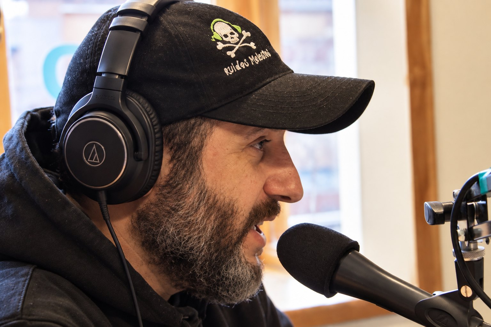

HISTORIAS QUE SIGUEN SONANDO
El rock no termina cuando termina la canción.
Explorá los programas, sus historias y los temas que las acompañan.

DETRÁS DEL MICRÓFONO
Sebastián Sopelana
Creador, conductor y productor de Ruidos Molestos.
FM del Lago 102.5 · San Martín de los Andes
ACCESO RESTRINGIDO
Estudio de conducción
Programas
Capítulos y canciones
Canciones del capítulo
Control de transmisión
Marcá qué capítulo y fragmento está sonando para sincronizar el estado del programa.